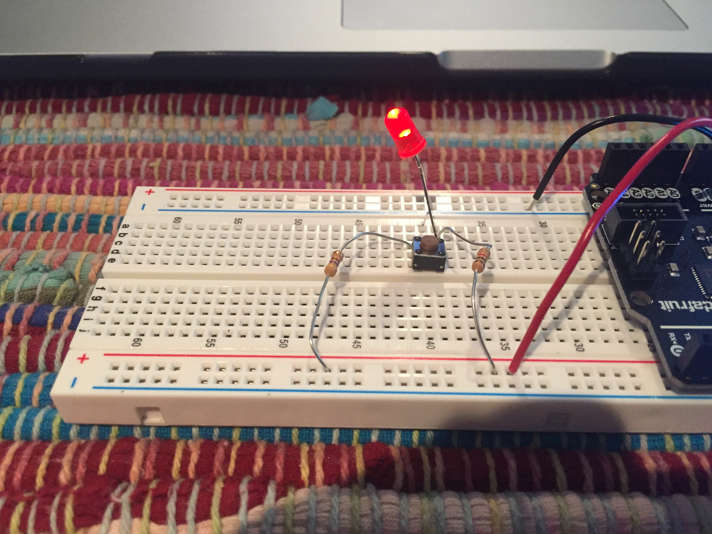
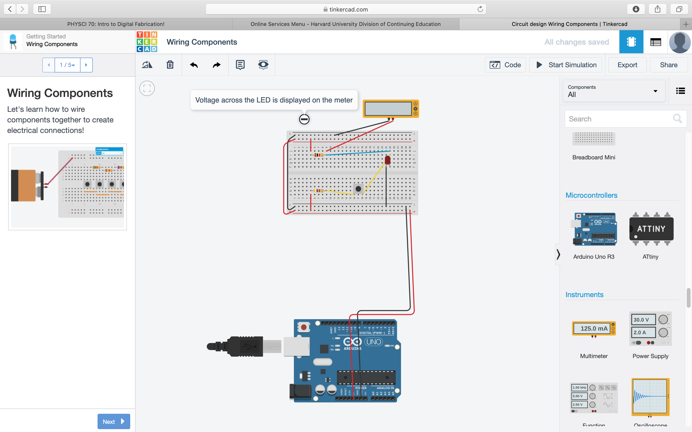

Here is a circuit I built during lab time to have a high and low beam LED.
Return to my home page.
Voltage readings across the LED
shown on TinkerCAD.

This circuit changes the brightness of the LED by having two possible voltages across the LED terminals. The voltage is changed by closing the pushbutton switch. This created a second parallel resistor in the circuit which lowers the total resistance to ground for the LED, causing the voltage across the LED to increase from 1.9vdc on low beam to 2.1vdc on high beam. The low resistor(which is always in the circuit is a 1k ohms. The resistor that is engaged by the switch for high beam operation is 470 ohms.
This is a video of the high/low circuit in action!
This video is of a circuit built with a potentiometer and a multi-color LED that is in our kit. The LED's color fades from blue to purple to red as the potentiometer varies the voltage to the LED; as the voltage is decreasing on the "red" input pin it is simultaniously increasing on the "blue" input pin. The center pin of the potentiometer is connected to +3.3vdc of the arduino board.
I will put a circuit diagram up soon.
Since the last Zoom meeting I finally (with Prof. Hart's help) got my website up on the class page!! I spent a lot of time trying to get my Metro board loaded/working but have not been able to get it going. On a positive note, I spent some time playing with some resistors/LEDs making a couple circuits that came to mind. I noticed that some LEDs in the kit appear to need different ohm resitors in series with them to produce approximately the same amount of light as other LEDs. I also added some additional items to my website including a "Random Things Steve Likes" link that I hope to add to as time allows. I have thought a few details I'd like to use on the hotdog cooker: I'm hoping to bend a sheet of plexi-glass this weekend for the "safety shield", which I've never attempted before! Also, while looking ahead in the S-12 page I noticed we will be learning about "pulse width modulation" which I think will work to control the solid state relay in my hotdog electrocution device.